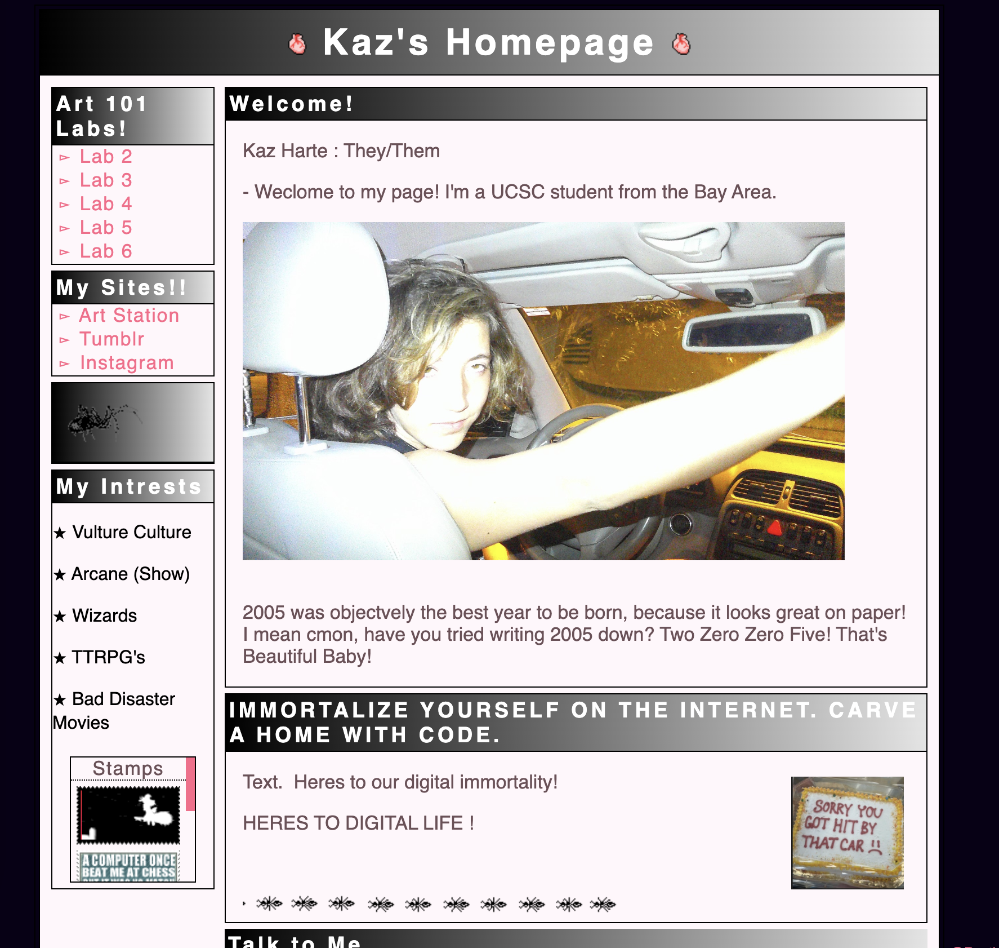
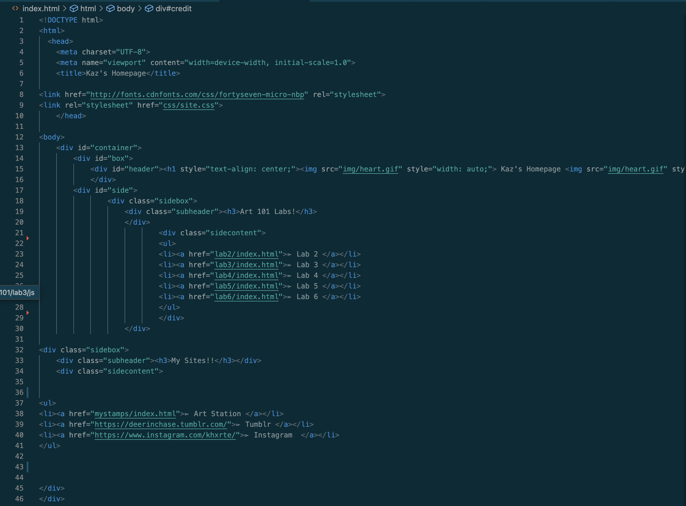
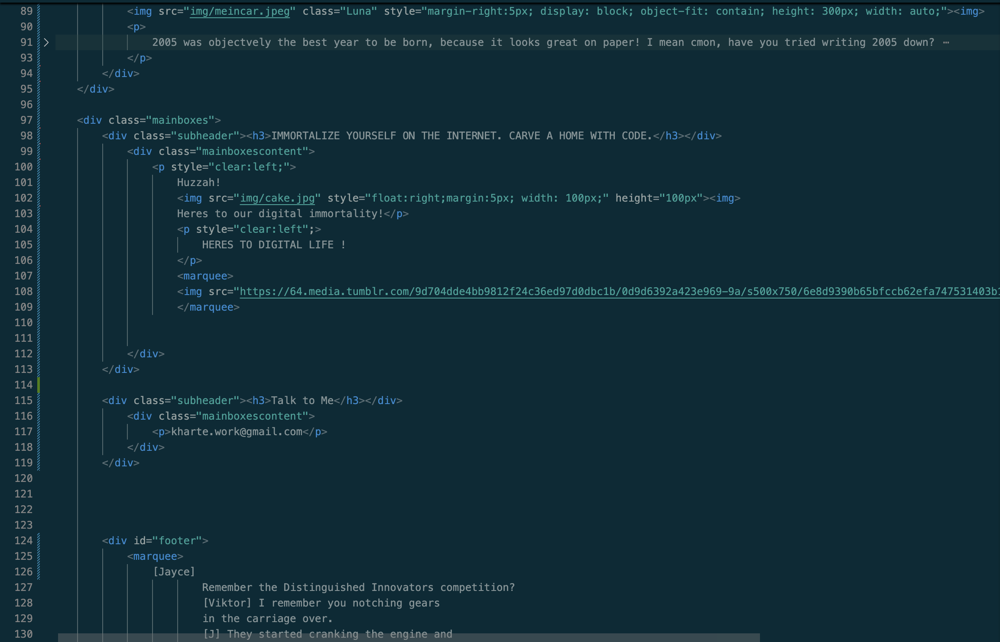
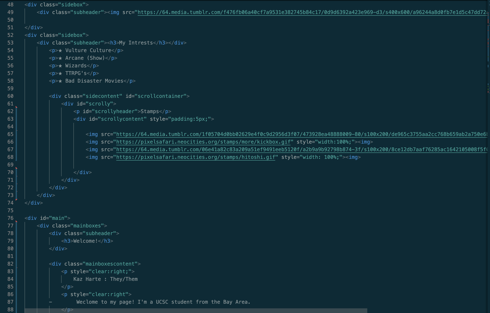
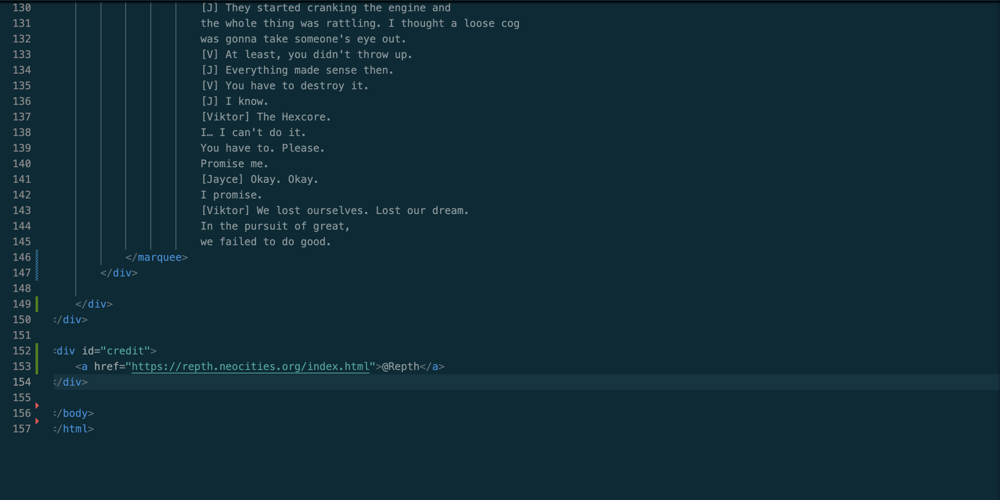

Lab 3 - File Structure and File Transfer
Challenge:
The challenge of this lab was to personalize our websites homepages with a picture of ourselves (from local files), an introduction and a list of our interests. When doing so, we were to also use at least one div section, one heading tag and one paragraph tag.
Problems:
Funnily enough, I was having trouble fitting the image of me inside the div bordered. I had completely given up, but almost immediately figured it out when putting the images of my code in Lab 3. I both love and hate how coding is so frustrating until it isn't.
I also had trouble properly formatting my page in a way I wanted. To get a better understanding of how to do so, I found a page template online, then built off of it by adding more boxes and fully customizing it by changing the font, color, and images within.
(credits for this template are linked at the bottom right of the screen.)
Reflection:
I had a lot of fun working on the front page of my website. I really enjoy customizing everything I can, as well as experimenting with code, so its very easy to go overboard. I enjoy
Results:
Heres what my code looks like in browser.
Code for the front page of my website.
   